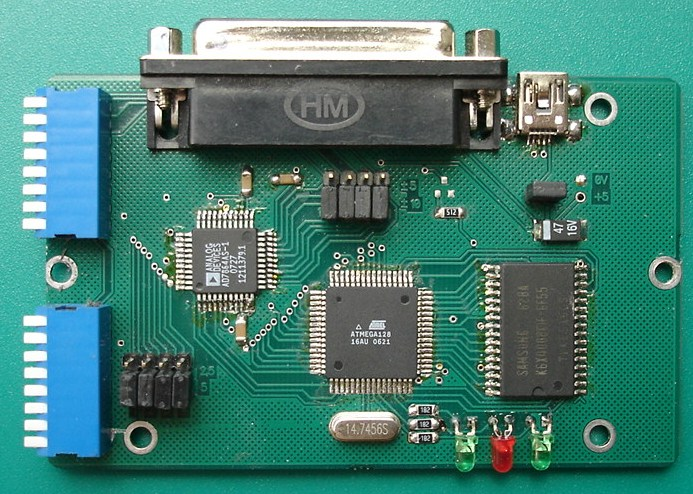
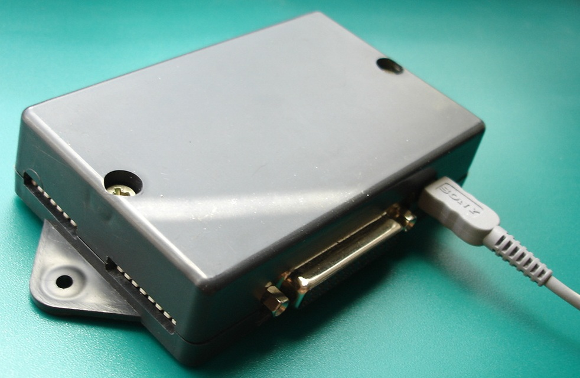

1) -10V...+10V and -5V...+5 (selection of 5V or 10V - can be performed
by the user by installing jumpers on the board)
2) -2.5V...+2.5V
3) 0...+2.5V and 0...+5V (selection of 2.5V or 5V signal - can
be performed by the user by installing
jumpers on the board).
Standard configuration: for
current ADC channels according to the 3rd option, for voltage channels -
according to the 1st option.
Controlled sampling frequency/accumulation time.
Internal clock source for
ADC samples. At max sampling frequency of 168kHz/N,
up to 240000 12-bit samples are recorded
into the memory located on the board (N is the number of selected channels, from one to
four).
The number of samples saved in memory can be selected from the range of 30000,
60000, 90000, 120000, 150000, 180000, 210000 or 240000.
In parallel with the analog signal recording,
3 digital signals are recorded, which can be displayed on the graph.
The dimensions and mounting
holes of the controller allow placing it in a cheap plastic
P27 enclosure.
-possibility of entering
conversion coefficients for devices connected by the
user, axis names
(by connecting your sensor, for example, a speed
sensor, you will be able to display speed on the graph
instead of voltage or current)
-documentation - the coefficients entered by you for the sensor connected to the
ADC and the name of the parameter measured by the sensor will be saved
in the data file, it is possible to save data
or fragments into a text file
-the original display of digital signals
allows observing them at any change of the
graph scale without mutual overlapping and
without interference for viewing the analog signal at
any scale change,
Working with the application graphs (scaling, moving fragments)
in the tutorial video
.
The main differences are the presence of 512KB memory, the possibility of autonomous operation, which allows installing the ADC, for example, on a moving object where it is impossible to place a personal computer or laptop; the results can be read at the end of the recorded process by connecting the computer to the ADC.
To convert the signal into digital data, a 12-bit ADC is used,
the maximum sampling frequency is 168kHz when a single channel operates. The sampling frequency/measurement time is selected in the computer application.
Data is accumulated in the
512Kx8 memory; upon completion of the conversion, the data
is transmitted to a computer for storage,
conversion, and display. The transmission time for 240000
samples (480000 bytes) is no more than 7s.
The computer application allows viewing the graph, saving data, and viewing saved data
Two mechanical switches allow selecting the unipolar / bipolar signal conversion mode and operating in the ranges of 0...-2V, 0...-5V, 0...+2V and 0...+5V for unipolar, as well as -1V..+1V or -2.5V...+2.5V for bipolar signal.
The DB25F connector of the device provides the connection of a signal cable.
Power supply is via USB cable from the computer; power supply from an external +5V source is also possible, consumption is 150mA.
This is a base unit, onto which software can be added as needed.